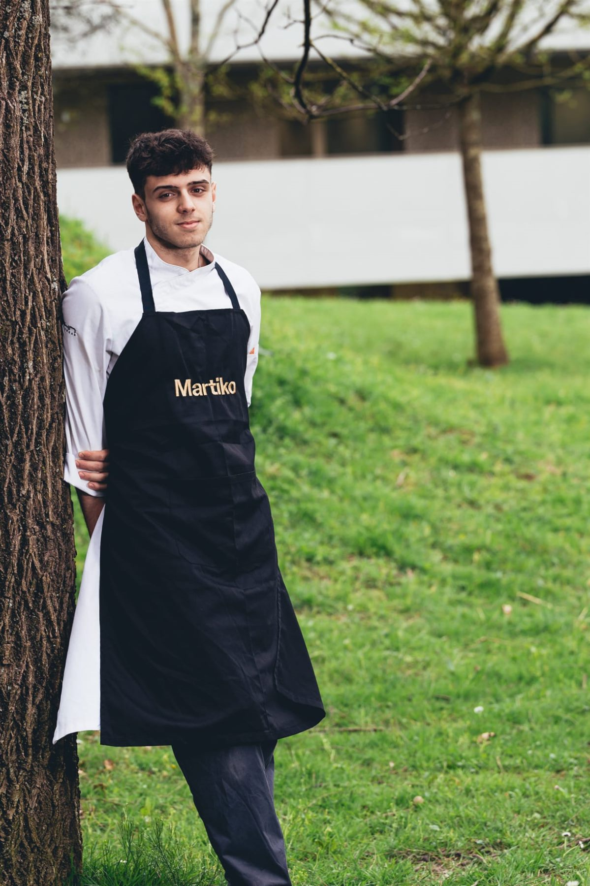
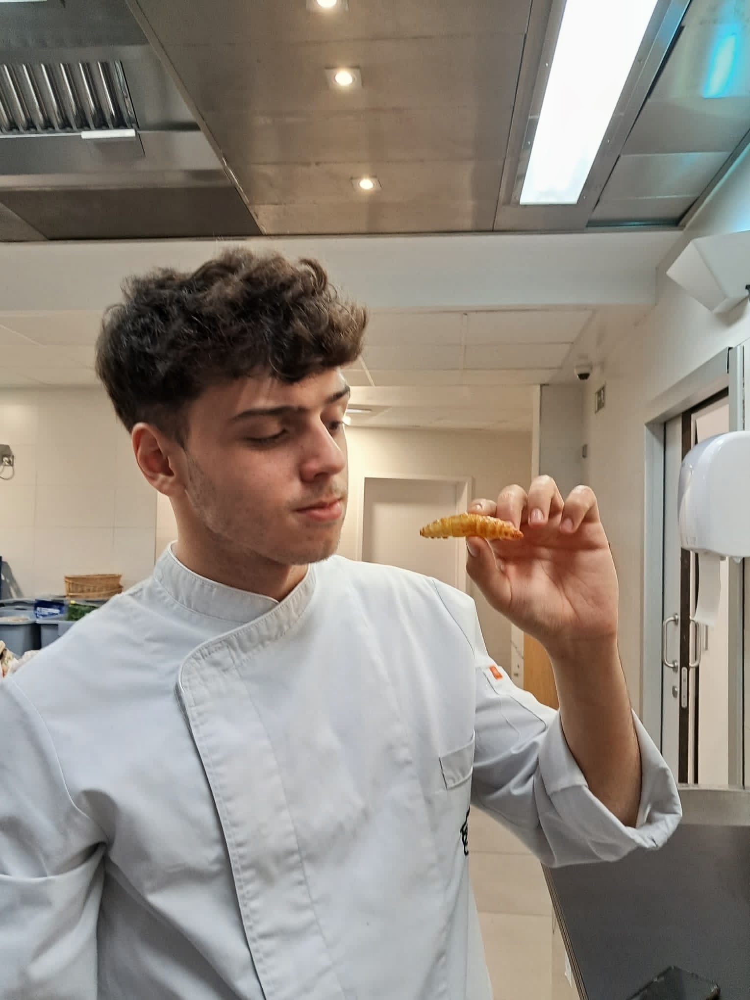

David
Revoltós
Gastronomic Sciences Specialist
Professional cook and food-science specialist shaping fine-dining experiences across Michelin-starred kitchens in Copenhagen, Madrid and Barcelona. Proactive, disciplined, and driven by culinary innovation.

I believe great cooking begins where scientific curiosity meets kitchen discipline.
Working across kitchens in Denmark and Spain has sharpened my ability to adapt quickly to new teams, languages and culinary traditions, while staying disciplined under pressure.
My path has combined rigorous kitchen practice: running stations inside a 3-Michelin-star kitchen, plating tableside for guests, and keeping pace with high-end tasting menus. Alongside that, I've followed a genuine curiosity for the science behind food, from fermentation and enzymology to hydrocolloids and the data and 3D-design tools that let me prototype new techniques.
My goal is to drive culinary innovation and contribute with passion to every project I join.
Formal training in culinary science

Bachelor's Degree in Culinary Sciences
A four-year degree pairing professional kitchen training with the scientific study of food (Food Physical Chemistry, Food Technologies and Industrial Processes, Nutrition and Dietetics, Senses). I paused for a year to work as Chef de Partie at Geranium, then returned to complete a Bachelor's Thesis on food-waste fermentation.
What I bring to a kitchen
A blend of hospitality, culinary craft and business discipline, built across Michelin-starred kitchens.
Fermentation Techniques
Enzymatic and microbial fermentation for new ingredients.
Guest Interaction & Service
Tableside engagement inside high-end dining rooms.
FOH Synergy
Seamless coordination between kitchen and front of house.
Tableside Dish Presentation
Interactive plating performed in front of guests.
Inventory Management
Stock control and waste reduction under pressure.
Culinary Innovation
Developing original techniques and dishes.
Storytelling Design
Framing dishes and menus as a guest narrative.
HACCP & Food Safety
Rigorous hygiene protocol across every station.
Menu Engineering & Recipe Costing
Balancing creativity with margin and profitability.
P&L & Financial Accounting
Reading and managing a kitchen's financial performance.
Cross-Departmental Collaboration
Maintaining consistency across kitchen teams and departments.
Professional certifications
Let's create something exceptional together.
Open to Chef de Partie, R&D and culinary-science roles across fine dining and food innovation. Based in Barcelona, open to relocation.